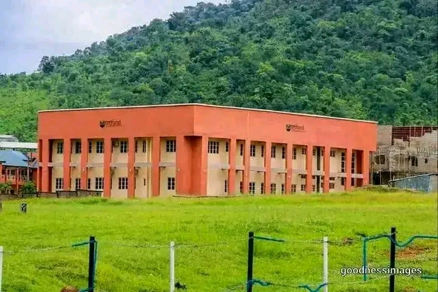
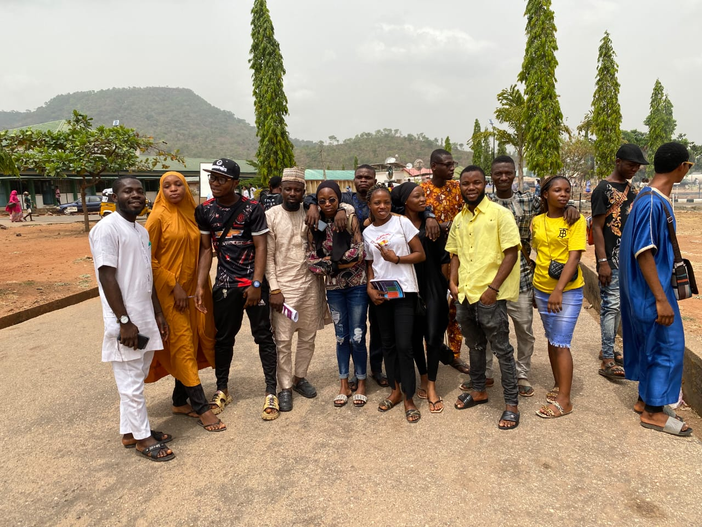

Our Campus

IT Department

Parking

Computer Science is one of the best Department in the School of Applied science in Kogi State Polytechnic, Lokoja
All Undergraduate
Pre-Nationa Diploma
Ordinary National Diploma
Higher National Diploma
Undergraduate education is education conducted after secondary education and prior to postgraduate education. It typically includes all postsecondary programs up to the level of a bachelor's degree. BE in the case of our college.
EXPLOREonline education involves learning and studying for academic or professional degrees, academic or professional certificates, academic or professional diplomas, or other qualifications for which a first or bachelor's degree generally is required, and it is normally considered to be part of higher education.
EXPLOREE-learning is short form for Electronic Learning. This is an academic or professional Remote learning that most Institution in some countries aquires their knowledge through E-learning, which makes student learning easy at their comfort zone at any time.
EXPLOREThis is a full time course offered by the Department of Management Technology with avision of expansion and mobilization of facilities for offering good quality management education and research in the country. To make sure a holistic management education and to assist the graduates develop into modern leaders of the future, the Institute provides possibilities outdoor the lecture rooms as well.
EXPLORE
Kogi state Polytechnic facilities is getting upgraded to topmost standard of any Institution ever/p>

Welcome to the Library of Kogi State Polytechnic Lokoja, Computer Science Department. It was established in the year 1984. It is regarded as the best technical Library. It serves as a knowledge hub containing resources not only in the form of print but also in e-resources .

Well Equipped Labs. Labs are equipped with world class equipments and facilities based on the latest technology pertaining to different sectors.

The Institute is committed to develop a novel framework for sustainable business ecosystem to promote innovation and nurture entrepreneurship. To impart impetus to innovation eco system, the Institute has established “KSP Technology Business Incubators Foundation”, a section 8 company in Dec 2016.
Kogi state Polytechnic Computer Science Deparment my supper Department

Yes, My college has necessary infrastructure and facilities. We have many fans, lights, blackboard, smart board in the classroom. We have all courses text book as well as other books in our library. Our college is always clean the food in canteen is hygienic too.

Yes it is an amazing life in that campus but i could only enjoy 1 year as later pandemic happened. There 3 basketball grounds, one football ground. badminton area, chess room, 3 canteen, library and much more. Yes the area is totally safe and it is 5-7 min walking from the station. Yes college can handle the emergenices